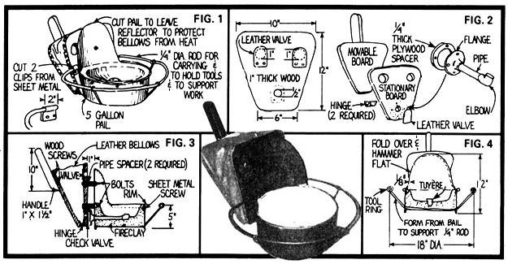

The following directions are for the construction of a small portable forge . . . a useful tool for the homesteader and handyman who occasionally needs to heat and work metal. I made the version described here in 1972-mostly from resources I had on hand-at a total cost of $2.07 for fireclay, plastic, and small hardware. Any parts you have to buy these days will be somewhat more expensive than they were at that time . . . but still very reasonable. If you do use these plans, I hope you'll feel free to substitute whatever suitable materials you have available.
The basis of my forge is a 5-gallon metal pail (such containers are used for the shipment of soap, roofing cement, and various industrial compounds and are normally thrown away as scrap by stores and contractors). With tin snips or a sab er saw, cut away the upper portion of the bucket, 5 inches from the bottom, around threequarters of the circumference . . . but leave an upstanding curved panel 12 inches high to serve as a reflector (see Figs. 1 and 4). Next trim a 1 inch strip from the original top of the pail and fasten it-rolled edge up-with sheet metal screws to the rough edge of the forge, to guard against damage from tools and work pieces. Then fold back the outer 1/8 inch of the reflector and hammer the metal down to form a stiff rim.
Cut two pieces of wood into the shapes shown in Fig. 2. One of thesethe stationary board-will be attached to the reflector as shown in Fig. 3. Drill two holes 1 inch in diameter in the board's upper portion, to serve as air intake ports. Cover these openings with leather flaps-on the face of the stationary board which will be inside the finished bellows-tacked down flat to act as valves.
Turn the same board over, fit a pipe flange to the lower half of its outer face, and scribe the outline of the metal collar on the wood. Within this first circle, mark another-I inch smaller in diameter-and drill a hole 1/2 inch across and off center inside the inner ring. Tack-a leather flap over the opening to form a check valve, and mount the flange with screws (over a ring-shaped spacer of 1/4inch plywood, to prevent interference with the check valve flap). Then fasten the stationary board to the reflector with two 1/4-inch bolts and two 1-inch-long pipe spacers.
Provide the movable board with a handle 10" X 1" X 1/2", attach it with wood screws, and connect the halves of the bellows at their bottom edges with a pair of hinges secured with screws from the inside. Cover the edges of the boards with leather or plastic as shown, taking care to both glue and tack the material to make a tight air seal. Double-lap the covering at the bottom and glue it firmly to the bellows' narrow lower end.
The tool ring surrounds the pail as shown in Fig. 1 and is used as a handle for the forge, a holder for tongs, a rest for work pieces, etc. Form a circle 18 inches in diameter from 1/4-inch rod, bend the ends flat to match the stationary board attached to the reflector, and fasten them in place with sheet metal clips (this helps stabilize the bellows). Affix the ring to the pail with a brace made from the bad of the original bucket (see Fig. 4) . . . and add any extra supports you feel are necessary.
Drill a hole in the pad in line with the center of the reflector and directly opposite the lower hole on the stationary board of the bellows. Cut a piece of pipe long enough to extend into the center of the container, fit it with an elbow, and screw this assembly into the flange on the bellows so that the elbow curves upward. Finally, mix 10 pounds of fireclay and cover the sides and bottom of the pail to protect the metal from heat . . . but leave the air outlet exposed. Let the clay dry, and fire up your forge!
|
 |
|
|